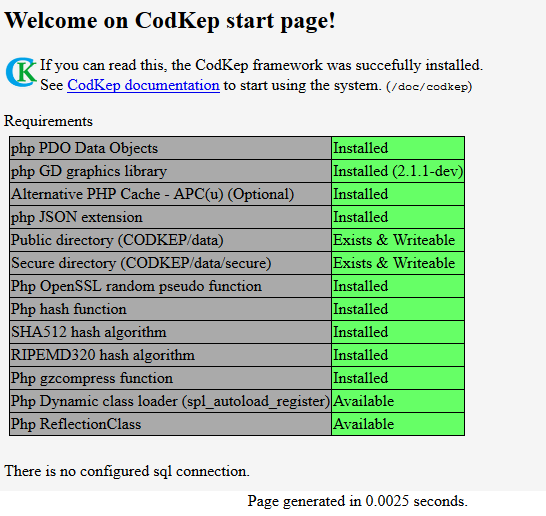

Installing, Modules
Installing codkep
Before you start, make sure your web server is running and php enabled.
The CodKep requires at least PHP 5.6.0 version.
To install the CodKep you only need to do is obtain the CodKep sources and extract to your webserver's root into a "sys" directory and make a symlink from sys/index.php to /index.php. See directories section for further explanations.
With the downloaded release package (Contains the sys with the symlink):
# In case the webserver's root is /var/www/html
$ tar xzvf codkep-XYZ.tar.gz -C /var/www/html
Or (the recommended) using the github.com repository (contains the sys directory only)
# In case the webserver's root is /var/www/html
$ cd /var/www/html
/var/www/html$ git clone https://github.com/hyper-prog/codkep.git sys
/var/www/html$ ln -s sys/index.php index.php
If the php is enabled on your web server, you can reach your website. You should see the start page of CodKep.

On the start page the CodKep will check some dependencies and prerequisites. Please install/do the necessary things to your system to correctly use the framework.
In order to create your own site with CodKep you have to create the following two files, which holds the settings of the new site.
| path/name | role |
|---|---|
site/_settings.php | The global settings of your site is done here. (This settings are expandable by modules) |
site/_modules.php | The modules of your site. You can enable disable your own modules in this file. |
See the Site settings, configuration chapter
to learn how to create _settings.php. Thereafter read the modules chapter
to create _modules.php. You can also set up the SQL connection in _settings.php.
The last step of the installation is usually the creating of sql schema. The codkep's sql module have a schema check page which can check and update the sql schema of the database. Its available under the "sqlschema" internal route. (Documentation of sqlchema page)
Directories
The following files and directories are exist in CodKep (webserver root after installing).
| name | purpose | in case of upgrade |
|---|---|---|
data | Contains the file data of the site executed by the framework | Does not need to touch this directory |
site | Contains your site settings, and custom modules written by the site builders. | Does not need to touch this directory |
sys | CodKep core files with core modules. No need to change anything here when build your own site. | This directory should fully overwrite |
index.php | Symbolic link to sys/index.phpThis is the entry point of the site. | Does not need to touch this link because the real file is ugraded in sys directory |
CodKep upgrade: All CodKep core files are located under sys directory, so in case of upgrade you only
need to rewrtite the whole sys with the upgraded version and leave other directories untouched.
Site settings, configuration
Every settings and modules belongs to your site is located in site directory.
The is two special file located in site which contains important settings of your site.
site/_settings.phpHolds your site configurationsite/_modules.phpHolds the enabled modules of your site
Let's see an example of site/_settings.php contains some important info to set.
This code can be used as start template for new site.
<?php
global $site_config;
//Change this in case if CodKep does not installed to webserver root
$site_config->base_path = '';
// $site_config->base_path = '/mysite';
// $site_config->base_path = '/~paul/web';
//Specify the internal location started when non requested (startpage)
$site_config->startpage_location = 'start';
//Specify your own page theme if you have one.
//$site_config->default_theme_name = 'flex';
$site_config->site_name = "CodKep site";
$site_config->site_slogan = NULL;
//Your site's favorite icon
//$site_config->site_icon = '/data/images/siteicon.ico';
//Default locale of the site
//$site_config->lang = '';
//Enable or disable page generation time below the generated content.
$site_config->show_generation_time = true;
//Enable clean urls.
// (Example: http://example.com/index.php?q=doc/codkep -> http://example.com/doc/codkep )
//Need some further settings in webserver to enable this. See clean url section in doc.
//By default it is false.
$site_config->clean_urls = false;
//Enable/disable your site hook table info.
//$site_config->enable_hook_table_info = true;
The sql database settings of the site is also come here:
global $db;
//Settings of the sql database
$db->servertype = "mysql";
$db->host = "127.0.0.1";
$db->name = "databasename";
$db->user = "username";
$db->password = "secretpassword";
$db->sqlencoding = "utf8";
//You can specify a password for sql schema editor page here.
//The editor can reached with this password in case no admin user logged in.
//You can disable this by set empty password.
$db->schema_editor_password = "VerySecretPassword";
global $site_config;
//Some debug functionality. Prints all sql command to the page end.
//$site_config->show_sql_commands_executed = true;
The system modules have many settings can be set this way. I won't list all of then, but let see some important here:
| name | module | default | description |
|---|---|---|---|
$site_config->base_path | core | '' | Installed location relative to the root of webserver. Leave empty if installed to domain's root. Start with "/" sign if specified. For example: "/mysite" |
$site_config->base_path_nonexfiles | core | NULL | Overrided location of static files like images, documents etc. |
$site_config->startpage_location | core | 'not_configured_startpage' | Default start location of the page |
$site_config->startpage_location_byhost | core | [] | Default start location of pages for different domain names. Associative array of domain names and locations |
$site_config->default_theme_name | core | 'flex' | The default page theme (style) name of the site. The internal locations can override this. |
$site_config->site_icon | core | 'sys/images/cklogo.ico' | The default favicon of the site. The sub-locations can override this. |
$site_config->notfound_location | core | 'notfound' | The "page not found" location of the page. If a non existent location is requested it will be redirected to here. |
$site_config->lang | core | 'en' | The default language locale of the site |
$site_config->site_name | core | NULL | The name of the site. (NULL if not defined) |
$site_config->site_slogan | core | NULL | The slogan of the site. (NULL if not defined) |
$site_config->logo_img_url | core | NULL | The url of the logo image displayed on page top. (NULL if not defined) |
$site_config->srv_remoteaddr_spec | core | NULL | If this settings is leaved NULL as the default, the CodKep determine the client IP address from the $_SERVER['REMOTE_ADDR'] which is usually reliable for determine client IP addresses. That case the web server is behind a reverse proxy or other address translation which hide/modify client address this settings can set to an arbitrary http header name where the client IP is put by the proxy. This value is can be (for example) the HTTP_X_CLIENT_IP or HTTP_X_FORWARDED_FOR depending on your proxy settings. The correct client IP is essential to user identification, form salts and blocking! |
$site_config->mainmenu | core | [] | The main menu structure of the site. It contains "menu item name"=>"menu item location" pairs. And also can contains sub-arrays. The generate_menu_structure() will generate the output according to this value. |
$site_config->mainmenu_append_tag_mainmenu | core | true | If this value is true the CodKep will append all route with #mainmenu tag to the $site_config->mainmenu array with the appropriate hash value as menu name. |
$site_config->cookie_domain | core | NULL | Set the domain of session cookie name. You can enable cross site login with specify this name to same value. |
$site_config->authcookie_name_salt | core | random value | A random salt value to generate authcookie name. The security is improved, when changed to some random data. |
$site_config->show_generation_time | core | true | Enable or disable page generation time info. (Bottom of the page) |
$site_config->main_script | core | 'index.php' | Main "entry point" of the codkep system. This used when a local url generated |
$site_config->clean_urls | core | false | Enable clean URL-s (Need furher settings to do) |
$site_config->parameter_autodefine | core | false | Enable using POST and GET parameter without explicit define them. Not recommended because security reasons. |
$site_config->hide_module_intros | core | false | If this settings is true the module introduction messages are not shown on not configured start page. |
$site_config->enable_hook_table_info | debug | false | Enable hook info pages located /hooks and /hookcalls |
$site_config->show_sql_commands_executed | debug | false | Show every sql command on bottom of the page |
$site_config-> | core | '' | Enable HTTP CORS (Cross-origin resource sharing) requests for sites to the value of this variable. The concrete http headers are not generated every time, its set by core_set_cors_headers() function. So if you need to enable REST CORS to your "exampledomain.com" you need to set the "http://exampledomain.com" value to this variable and call the core_set_cors_headers() function in your REST callbacks. (The built in node callbacks calls this automatically) |
$db->servertype | sql | 'none' | Type of sql server mysql pgsql none |
$db->host | sql | '' | Hostname of the sql server |
$db->name | sql | '' | Database name on the sql server |
$db->user | sql | '' | Username of the sql server |
$db->password | sql | '' | Password for the sql server |
$db->sqlencoding | sql | '' | Runs SET NAMES sqlencoding; sql command to set the connection encoding immediately after database connect. The default is empty string, which bypass running of SET NAMES. |
$db->auto_error_page | sql | true | Should the sql executer functions automatically redirects to error page when something wrong during an sql operation. (Some kind of automatic error handling) |
$db->schema_editor_password | sql | '' | You can specify a password for sql schema editor page here. The editor can reached with this password in case no admin user logged in. (Empty means disabled) |
$db->schema_editor_allowed_for_admin | sql | true | Should sql schema editor allowed to use for administrator users without special schema editor password |
$site_config->enable_speeformbuilder | sfbuilder | false | Enable to use speedformbuilder page: Speedformbuilder |
$site_config-> | sfbuilder | false | Enable speedformbuilder to use CodKep server side to generate form preview |
$site_config-> | sfbuilder | false | Enable speedformbuilder to query/load existing node definition to the builder |
$site_config->node_unauth_triggers_login | node | false | |
$site_config->public_file_path | file | 'data' | |
$site_config->public_file_url | file | '/data' | |
$site_config->secure_file_path | file | 'data/secure' | |
$site_config->secure_file_url | file | '/data/secure' | |
$site_config-> | doc | false | Disable the documentation location of the system: doc/* You can reuse this location this way. |
$flex->mainmenu_pos | flex | BETWEEN_LOGO_HEADER | Properties of flex theme. Controls the location of main menu. |
$flex->sidebar_blocks_have_border | flex | false | Properties of flex theme. Sets wheter the sidebar boxes have borders. |
Every module can extend this settings with their own by using boot hook.
For example if the "mymodule" should have an "amount" value with default value 10 the boot hook looks like this way:
//mymodule.php
function hook_mymodule_boot()
{
global $site_config;
$site_config->amount = 10;
}
This way the "amount" value can be changed in site/_settings.php file
and can be reach in every module with the default or set value.
Modules
A codkep module is a php file or files containing some functionality and is written in PHP. The module code executes within the context of the site, it can use all the functions and access all variables and structures of CodKep core.
You can build and customize your own site by writing modules to CodKep, so that a site building should start by write your own module and extend the core.
- The CodKep modules are php files.
- The active modules have to be listed in
site/_modules.phpfile.
The third party and own modules (not system) are located under site directory.
The site/_modules.php contains the $site_modules global associative array
which contains the name and path of the loadable modules.
An example site/_modules.php
<?php
global $site_modules;
$site_modules =
[
"mymodule" => "mymodule.php",
"anotherlib" => "anotherlib.php",
];
In the example above
- The "mymodule" is the name of the module. (The hook names will contains this string)
- The "mymodule.php" is the path of the php file relative to
sitedirectory
You can enable or disable modules by commention out the line of the desired modules in _modules.php.
The modules can modify or extend the CodKep functionalities by hooks.
It means that writing own modules named "xyz" is starting with the following steps:
- Create an empty xyz.php file in
sitedirectory. - Add
"xyz" => "xyz.php"line to the$site_modulesarray in_modules.phpfile. - Write functions to xyz.php with special names to implement some hooks
The CodKep core's functionality can changed by hooks within the modules.